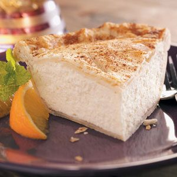

Back
Cheese Pie

Description
The most delicious pie out there.
It is a combination between a sweet flavour and a light and creamy texture.
Ingredients
- 2 large eggs
- 1 sheet refrigerated pie pastry
- 1 teaspoon ground cinnamon, divided
- 1-3/4 cups ricotta cheese
- 4 ounces cream cheese, softened
- 3 tablespoons confectioners' sugar
- 1-1/2 teaspoons cornstarch
- 1/2 teaspoon vanilla extract
- 1/2 teaspoon salt
Steps
- Separate one egg. In a small bowl, lightly beat egg white; set aside. In another small bowl, combine egg and egg yolk; set aside.
- On a lightly floured surface, unroll pastry; cut in half. Roll out one half of pastry into an 8-in. circle. Transfer to a 7-in. pie plate; trim pastry even with edge. Brush with egg white; sprinkle with 1/2 teaspoon cinnamon.
- In a large bowl, combine the cheeses, confectioners' sugar, cornstarch, vanilla, salt and egg mixture. Pour into prepared pastry.
- Roll out remaining pastry to fit top of pie. Place over filling. Trim, seal and flute edges. Cut slits in pastry. Brush remaining egg white over pastry; sprinkle with remaining cinnamon.
- Bake at 350° for 45-50 minutes or until a knife inserted in the center comes out clean. Cool completely on wire rack. Refrigerate leftovers.
Link to Original Recipe page